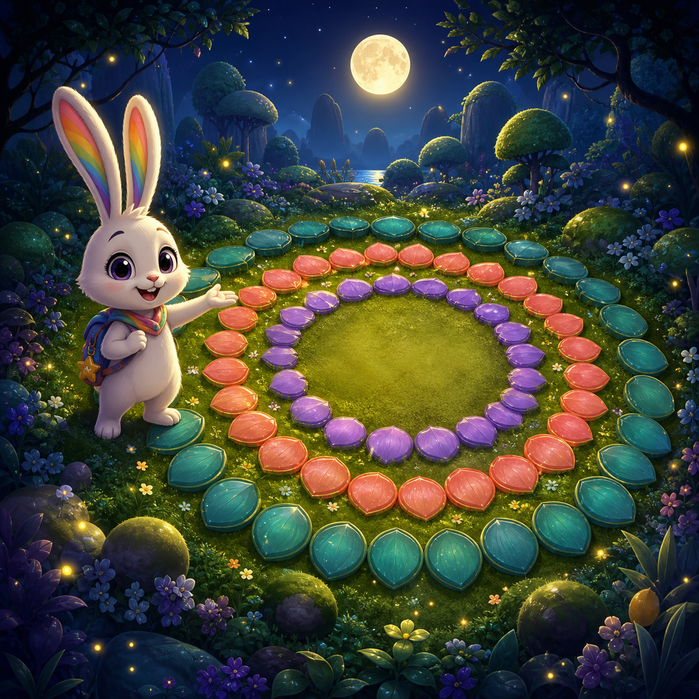
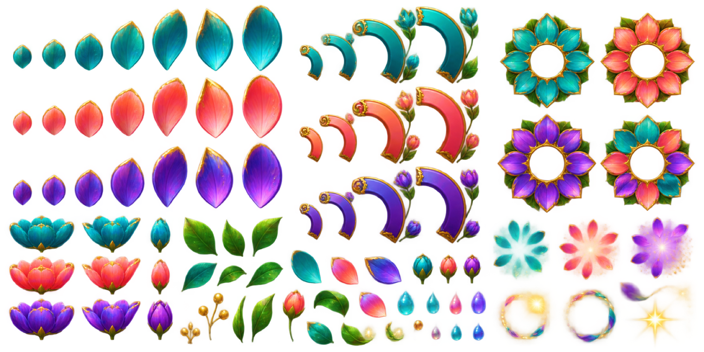
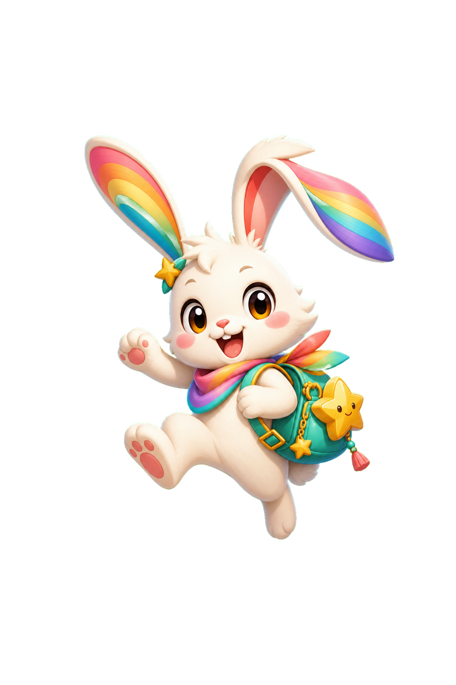

MOONLIGHT PATTERN PUZZLE
Ring Garden
Turn three petal rings until the moon-garden pattern blooms.
A calm three-ring puzzle with four moonlit gardens.
Garden progress: 0 / 4
4 gardensRing turnsCalm replay

MOONLIGHT PATTERN PUZZLE
Turn three petal rings until the moon-garden pattern blooms.
A calm three-ring puzzle with four moonlit gardens.
Garden progress: 0 / 4
A calm three-ring puzzle with four moonlit gardens.
MOON GARDEN
Match the three rings to the target petals.

Choose a ring to begin.
GARDEN COMPLETE

Your moon garden is glowing.